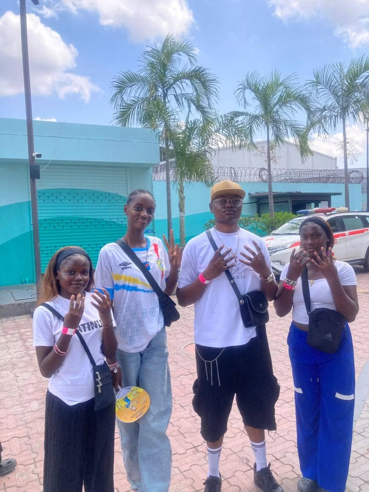

Activite Scolaire
Saint edouard n'est pas simplement la pour assurer une bonne formation, elle s'occupe a l'epanouissement des vos enfants et a leur amusement
Nous disposons de plusieurs activite scolaire ou para scolaire que nous organisons au cours de chaque année scolaire
Inter classe & scolaire Sportives
Nous organisons des activités sportives pour encourager la santé physique et le travail d'équipe. Les élèves peuvent participer à des tournois de football, de basketball, de volleyball et d'autres sports.
Journee Culturelles
Nous proposons également des activités culturelles pour enrichir les connaissances et les compétences des élèves. Cela inclut des ateliers d'art, des concerts, des spectacles théâtraux et des expositions. comme celebrer le 8 mars, la fete de l'independance, la fete de la jeunesse et d'autres evenements culturels.

Journee Investiture
Nous organisons des cérémonies d'investiture pour célébrer les réalisations académiques et personnelles des élèves. Ces événements permettent de reconnaître les efforts et les succès des étudiants dans divers domaines.
Sortie Scolaire
Nous organisons des sorties scolaires pour enrichir l'expérience éducative des élèves et les encourager à explorer leur environnement. Ces activités permettent aux élèves de mettre en pratique ce qu'ils ont appris en classe dans un cadre plus large et interactif.
